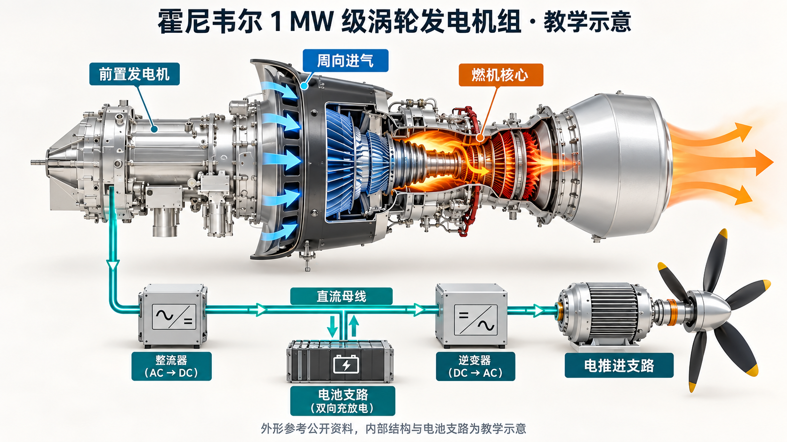

INTERACTIVE PROPULSION STUDY / 01
从能量路径，理解串联。
双电动螺旋桨 · 电池缓冲
● 正在构建教学模型HGT1700 + 1 MW / STUDY
拖动旋转 · 滚轮缩放 · 点击部件查看
当前设备无法启动三维显示，请切换“能量图谱”查看完整交互。

燃气 / 热能机械轴功电功率电池充放电
观察方式
动画转速经过缩放，不代表真实转速或电流传播速度。
任务工况
TEACHING功率分配
kW电池母线侧限制：放电 400 / 充电 250 kW。参数均为示例。
母线负载需求
电池放电 → 母线
可用推进轴功率
燃机输出轴功率
THE KEY DISTINCTION
“串联”描述的是功率路径。
燃机通过发电机、电力变换与电动机间接驱动推进器。燃机和推进桨之间没有直接的机械传动轴，因此两者的转速可以分别控制；但仍受电功率平衡、储能和温度约束。
Pgen,DC + Pbat,DC = Pload,DC电池放电为正，充电为负；稳态母线简化。
ηgen = 0.96 · ηrect = 0.98
ηinv = 0.97 · ηmotor = 0.95
TAKE THE MODEL WITH YOU
把结构和过程带走。
概念图、可独立播放的矢量动画，以及当前三维视角。